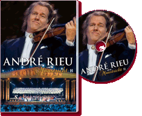

|
Live In Maastricht II (2008) - 123 Minutes
|
 |
André is home again! Back in his home
town of Maastricht in time for the traditional summer
evening concert on the Vrijthof. Once again the famous
square has been transformed into a fabulous open-air
temple to music. And this new live DVD will allow you to
experience André Rieu at his best. It features the
Johann Strauss Orchestra, 100 children from the music
school, the Platinum Tenors, Mirusia, Carmen and Suzan
and the 13-year-old musical talent Melissa Venema on the
trumpet. A real high point is the performance with the
world-famous Mastreechter Staar male voice choir. And
the spectacular appearance of 150 choir members holding
torches was a musical and visual delight that you simply
cannot miss.
So enjoy this fabulous summer evening concert on our new
live DVD: André Rieu – live in Maastricht 2. |
Where to buy?
|
|
DVD Tracklist
- Seventy-six Trombones
- Flieger March
- Clavelitos
- Irish Washerwoman
- Chianti Lied
- Nessun Dorma
- Olé Guapa
- Ave Maria
- Amigos Para Siempre
- Il Silenzio
- Bugler's Holiday
- Conquest of Paradise
- Soldiers' Chorus
- Twelve Robbers
- Huntsmen's chorus
- Funiculi, Funicula
- La Vergine degli angeli
- When I'm Sixty-Four
- Oh Fortuna (Carmina Burana)
- Radetzky March
- Strauss & Co.
- Maastricht Hymn
- Maastricht, Stadt der fröhlichen Sänger
- 2.4 Die kleine Kneipe
- La donna è mobile
- Wie schön unser Limburg ist
Bonus:
- Music School: Violin Concerto in A minor
|
|